기획 · 제품
픽업·한 가게 한 장바구니 같은 비즈니스 규칙을 코드와 DB에 일치시키기 위해 흐름을 먼저 정리하고, MVP와 운영(관리자·배너) 범위를 문서·ERD 수준에서 합의했습니다.
 Portfolio
Portfolio
Team Project · EAT-IT / 밥세권
밥세권은 위치 기반으로
매장의 남은 재고를 최적화해 외식비 절감과 환경 개선을 목표로 하고,
가까운 매장의 상품을 빠르게 연결하는 Web 서비스입니다.
저는 팀에서 주문·결제·장바구니·관리자(Admin) 도메인을 중심으로 백엔드를 담당했고,
퍼블리싱·ERD·연동(Toss·카카오맵)까지 기획·구현·운영이 이어지는 축을 끝까지 맞췄습니다.
공식 PM 직책은 아니었지만, 결제 무결성·DB 구조·관리자 흐름처럼 서비스 전체에 걸친 결정에서는 팀 안에서 기술·일정·범위를 조율하며 방향을 제시한 경험이 있습니다. 아래는 기획자·PM 관점의 정리와 개발자로서의 구현을 함께 적었습니다.
Role · Leadership
PM이 아닐 때도 도메인을 잇는 사람으로서, 요구를 기능·데이터·일정으로 바꾸는 축을 맡았습니다.
픽업·한 가게 한 장바구니 같은 비즈니스 규칙을 코드와 DB에 일치시키기 위해 흐름을 먼저 정리하고, MVP와 운영(관리자·배너) 범위를 문서·ERD 수준에서 합의했습니다.
결제 스냅샷·무결성, 장바구니 가게 ID 검증 등 리스크가 큰 설계는 제가 제안하고 구현을 주도했습니다. 연동·DB 이슈에서 대안 비교와 우선순위를 팀과 맞추며 기술 방향을 정했습니다.
MVC2 컨트롤러·주문·결제·Admin까지 엔드투엔드 구현과 커뮤니티·상품 UI 일부를 담당했습니다. 운영자가 배포 없이 이벤트를 메인에 올릴 수 있게 하는 등 실행 가능한 형태로 마감했습니다.
Vision
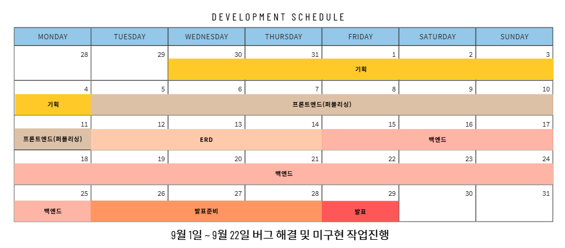
What · Why · How
밥세권 서비스의 전체 구매 흐름과
관리자(Admin) 기능 전체를
백엔드에서 단독 개발했습니다.
픽업 기반 지역 플랫폼 특성상 가게 간 상품 혼합 불가, 재고/상태 검증, 주문 무결성이 필수이기 때문입니다.
MVC2 기반 Controller에서
예외 검증 → Redirect 처리 → Snapshot 구조를 설계했습니다.
결제 도중 값이 변조되는 문제를 해결하기 위해
“주문 스냅샷”을 결제 직전에 저장하고 Toss 서버 응답과 비교하는 방식으로
무결성을 보장했습니다
결제 승인/취소 흐름이 안정화되고 관리자가 모든 서비스 활동을 통합 관리할 수 있는 완전한 운영용 Admin Panel이 완성되었습니다.
My Role
커뮤니티 게시판 UI/기능 전체 개발,
상품 조회 화면 퍼블리싱 및 사용자 경험 흐름 개선을 담당했습니다.
장바구니·찜·주문·결제·가게
그리고 관리자 기능 등
핵심 비즈니스 로직을 개발했습니다.
특히 Toss 결제 검증 과정에서
스냅샷 기반 무결성 검증 구조를 도입하여 안정성을 확보했습니다.
Oracle 21C 기반으로
ERD를 공동 설계했습니다.
상품·가게·주문·회원 등 테이블
구조를 설계 및 정규화했습니다.
또한 PK/FK 참조관계 및 인덱스를 조정하여
조회 성능과 데이터 무결성을 개선했습니다.
프론트·백·DB까지 End-to-End로 연결했고,
결제·무결성·관리자처럼 서비스 품질이 갈리는 지점을 직접 책임졌습니다.
팀 일정 안에서 우선순위를 조율하며 기능을 마감했습니다.
Flow · MVC
검색어 필터링 · 페이지네이션 · 목록 포워딩
상품번호 검증 → 없는 경우 Redirect → 상세 데이터 로드
기존 장바구니와 다른 가게 상품 시 Confirm 페이지 제공
스냅샷 생성 → 재고/상태 검증 → 장바구니 갱신
주문금액 계산 · clientKey로 Toss API 준비
secretKey로 승인 처리 → DB 저장 → 성공 페이지
Screens
사용자가 탐색 → 담기 → 검증 → 결제로 이어지는 동선을 화면 흐름으로 정리했습니다. 각 스텝은 실제 서비스 캡처입니다.
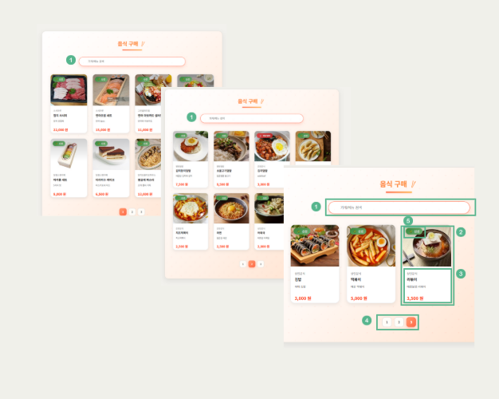
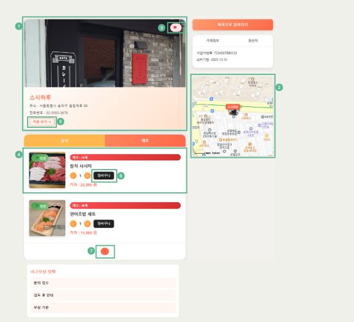
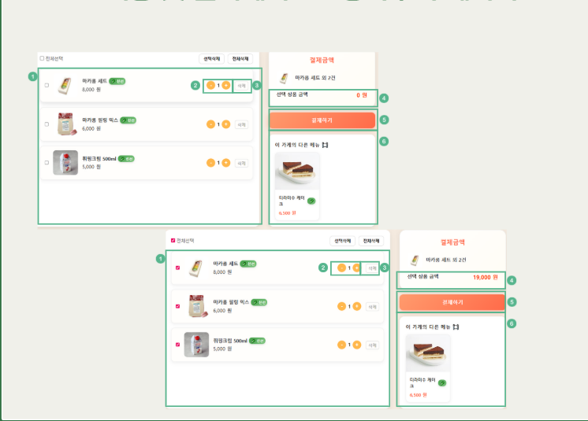
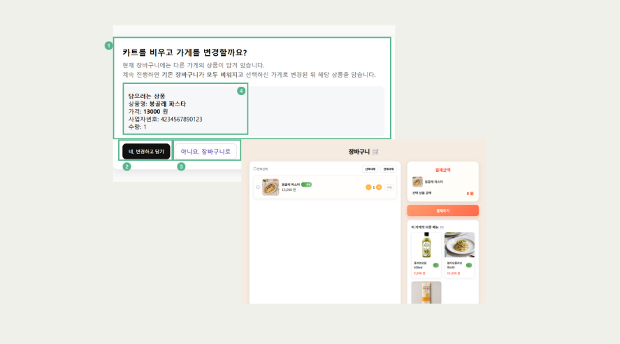
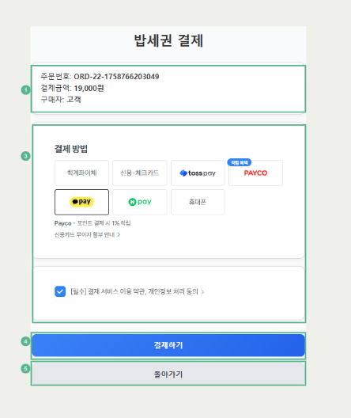
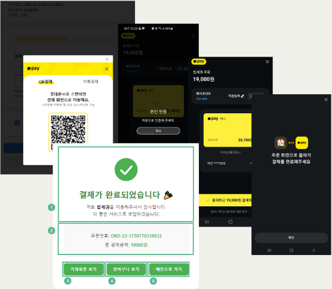
Deep dive
TossPayments 결제 과정에서 사용자가 브라우저에서 데이터를 변경할 경우
주문 상태와 결제 결과가 불일치하는 문제가 발생했습니다.
주문 정보를 결제 직전 스냅샷으로 저장하고
Toss 서버 응답과 비교해 위·변조 가능성을 차단했습니다.
이를 통해 결제 승인/취소 로직의 무결성과 안정성을 확보했습니다.
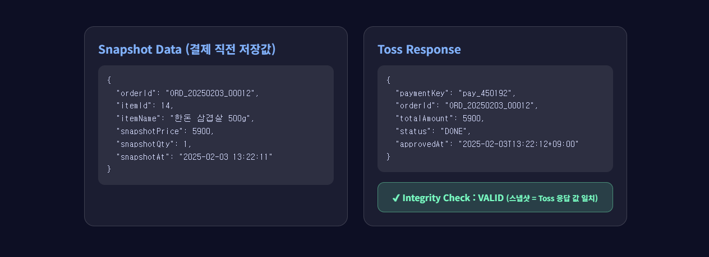
공지사항 게시판에서 공지와 이벤트를 분리하여 관리할 수 있도록
게시글 유형 구조를 재설계했습니다.
이벤트 유형으로 등록된 게시물은 자동으로
메인 페이지 배너 영역에 노출되도록 구현했으며,
이미지 업로드 및 링크 설정 기능을 추가하여
운영자가 별도 배포 없이 즉시 이벤트를 반영할 수 있도록 개선했습니다.
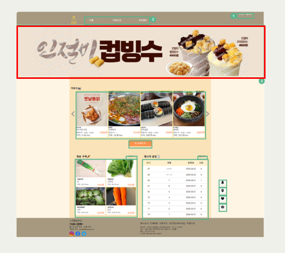
초기 테이블 구조에서 가게·상품·주문 간 참조 관계가 불명확해
데이터 무결성 저하와 수정 어려움이 우려되었습니다.
ERD를 재설계하여 PK/FK 관계를 명확히 하고,
테이블 정규화를 통해 데이터 정합성과 유지보수성을 높였습니다.
결과적으로 시스템 전체 안정성이 향상되었습니다.
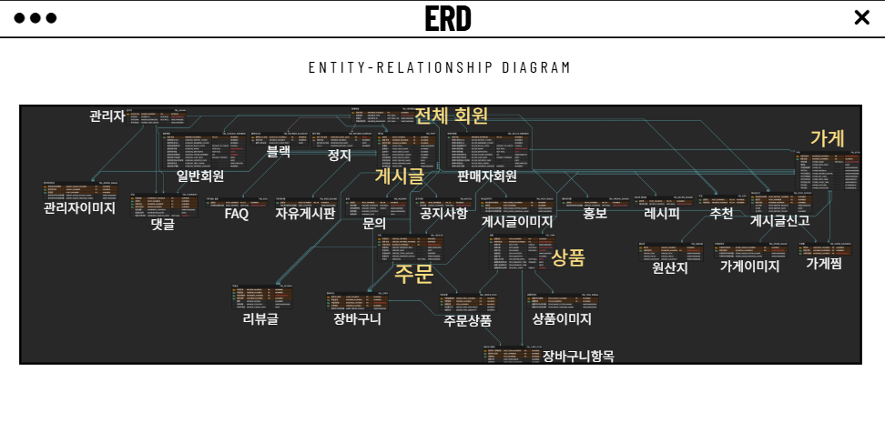
서로 다른 가게 상품이 장바구니에 함께 담겨
플랫폼 핵심 정책인 “한 장바구니 한 가게 정책”이 깨지는 상황이 있었습니다.
장바구니에 가게ID 스냅샷을 저장해
다른 가게의 상품이 추가되는 경우 감지하도록 처리했고,
혼합 시 장바구니를 초기화하거나 사용자에게 안내하도록 개선했습니다.
DB 레벨에서 FK 구조를 보완해
서로 다른 가게 상품이 섞여 저장될 수 없도록 무결성을 강화했습니다.
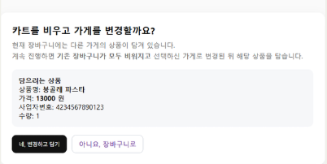
Operations
주문·회원·게시글 현황을 실시간 통계로 제공하여 서비스 운영 상태를 한눈에 파악
회원 상세 조회, 상태 변경(경고/정지), 블랙리스트 관리 기능 제공
게시글 신고 접수 후 처리 → 결과가 게시판 및 회원에 반영(경고 및 정지/블랙리스트)
공지·자유·홍보·레시피 등 게시판별 게시글 모니터링 및 삭제·수정 기능
FAQ/문의(1:1 게시판) 관리 기능으로 사용자 상담 프로세스 운영
공지/이벤트 글 중 이벤트 태그가 선택된 게시글을 자동으로
메인 배너에 노출 구현.
이미지 업로드·링크 설정 기능 제공
Admin UI
운영·모더레이션·문의까지 한 패널에서 통제할 수 있도록 화면을 묶었습니다. 로그인 이후 동선을 시각적으로 나열했습니다.
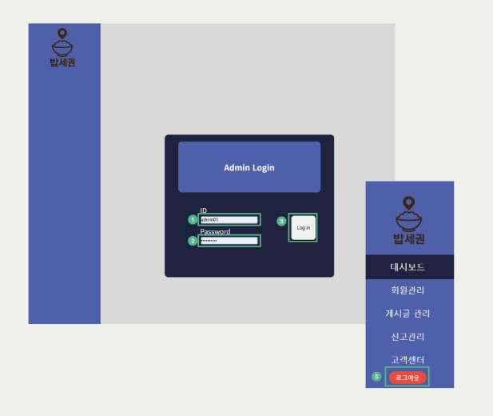
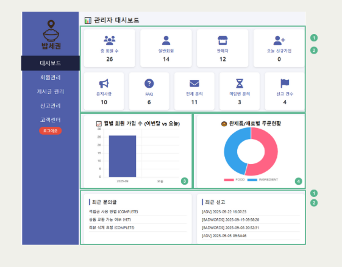
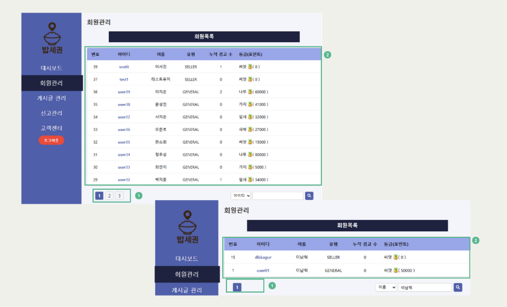
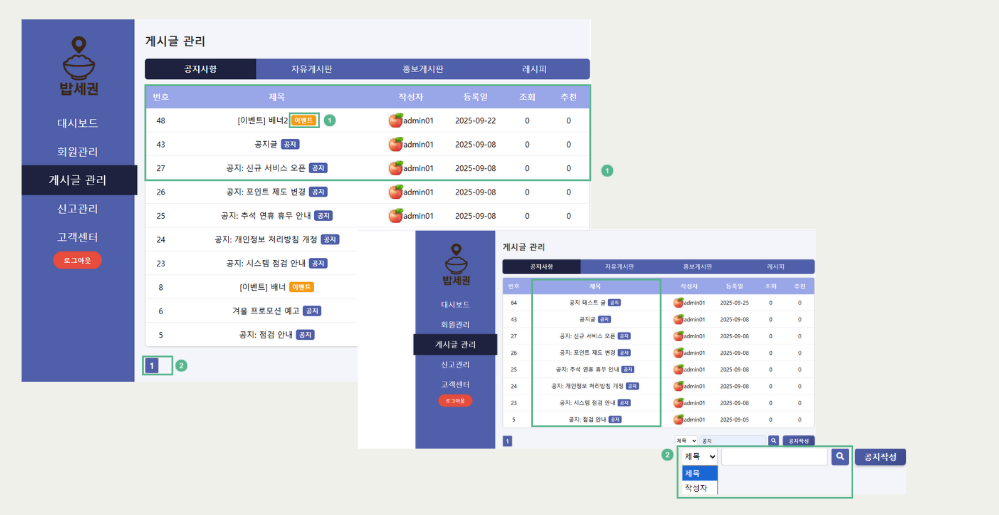
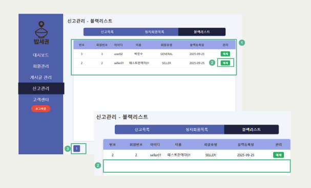
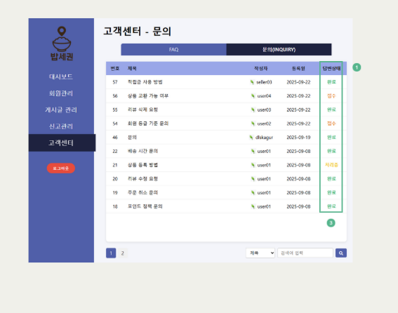
Stack
HTML · CSS · JavaScript
Java (JDK 17), JSP/Servlet, MVC2
Oracle 21c, DBeaver, ERD Cloud
Tomcat 9, Eclipse, VSCode
TossPayments · Kakao Map API
Git · GitHub · Git Flow
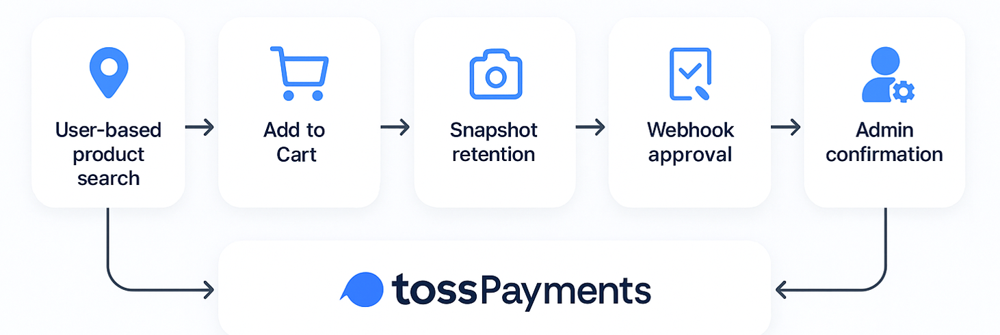
사용자 위치 기반 상품 조회 → 장바구니 담기 → Snapshot 보존 → TossPayments 결제 → Webhook 승인 처리 → 주문 확정 → 관리자(Admin) 확인 및 운영 프로세스까지 전체 기능이 하나의 통합 서비스 흐름으로 동작합니다.
Deck
프로젝트 발표자료를 아래 버튼을 통해 다운로드할 수 있습니다.
PDF 다운로드